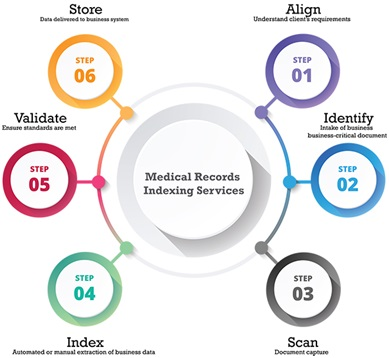

Arm Fox’s professional medical records scanning and indexing outsourcing services aims to organize your records to make it easy-to-use, while updating and reinventing our indexing process to make it more simple and efficient. Our outsourced medical records indexing services cover scanning, indexing, and data-archival, which together facilitate easy access and retrieval and updating of records from your EMR software.

At Arm Fox, we follow a methodical offshore medical record indexing process that streamlines and simplifies the management of patient records in a systematic and structured healthcare ecosystem. This process can be marked by a series of sequential steps, which include:
Being a premium medical record scanning and indexing company, we take great pride in implementing a proven and efficient workflow to index medical records. This workflow can be outlined as follows
Having serviced clients across multiple countries worldwide over the past several years, we have acquired commanding proficiency in medical records indexing outsourcing services. Our offshore medical records indexing processes are HIPAA-compliant and are handled by a dynamic team of experts with extensive experience in managing medical bills and related documents. And unlike other medical records indexing companies, we don’t stop with providing standard medical records indexing services; we go the extra mile to offer customized medical records indexing services that meet your specific requirements. We do it by assigning a dedicated project manager who works closely with you to ensure undivided attention to all your needs and guarantees a faster turnaround time. We have also added multiple levels of quality controls and reliable technology tools, to ensure that you receive the best of services at all times. The biggest plus of our medical records indexing services however is that, we track the quality and productivity of the indexing and scanning process in dashboards. We even generate real-time reports to give you an inkling of the actual time spent in scanning, and indexing documents. This helps our customers discover ways to tailor our work models to their needs and bring about additional efficiency to medical records indexing process.
When you outsource medical records indexing services to us, you can achieve remarkable productivity rates when it comes to extracting all available data from a document, with or without the use of bar codes and separator pages, and auto indexing.
In addition to industry best practices employed by standard medical records indexing companies, we also implement advanced missing and misfiling document detection mechanism, which eliminates the chances of documents being electronically filed into incorrect patient chart.
We provide real-time visibility into every aspect of our offshore medical record scanning and indexing process, including intricate details regarding accuracy and productivity of individual employee associated with this process.
Quality control is often a major concern when it comes to scanning and indexing documents in-house. Using a carefully crafted mechanism, we eliminate this concern and give you the ability to simply take bundles of loose documents, drop them into scanners across your organization and index them centrally.
You can automatically monitor, manage and compare discharges to the charts that have been scanned using our medical records indexing outsourcing services.
You can automatically index orders in seconds with Arm Fox.
Our medical records indexing services allows you to electronically import documents from external sources such as USB drive, CD, email, fax queue or other media.
Want to reassign form names? You can easily do it electronically in a single click with our medical records indexing outsourcing services.
When you choose Arm Fox, you’ll partner with medical records indexing company that is focused on providing advanced scanning, indexing, and data-archival solutions, which together facilitate easy access, retrieval and updating of records from your EMR software.